THE BRIDGE WIRE is the student paper of Bridge Water University — the campus’s own gossip organ, edited by Priest, the school journalist. The Wire covers the kingdom: the star, the cheer captain, the girl between the tables. It gossips about the powerful, never down at Gigi. Every issue is a narrated video edition of one episode of BRIDGE WATER AVE, the dark emo romance streaming free on Pocket FM.
| No. | Episode | Headline | Edition |
|---|---|---|---|
| 1 | Two Lines | THE KING’S SECRET HAS A HEARTBEAT. | Nov 8, 2026 — launch night |
| 2 | Not Yet | HE SAID TWO WORDS. SHE WALKED AWAY. “NOT YET.” | Nov 8, 2026 — launch night |
| 3 | The Envelope | TWO ENVELOPES. ONE WAY OUT. | Nov 8, 2026 — launch night |
| 4 | Thank You | THREE ANSWERS. ZERO SENT. | Nov 8, 2026 — launch night |
| 5 | Blind Item | BLIND ITEM — WHICH GOLDEN BOY CAN’T SLEEP AT NIGHT? | Nov 8, 2026 — launch night |
| 6 | Kingdom Cracking | ONE ITEM. FOUR PEOPLE CRACK. | Nov 8, 2026 — launch night |
| 7 | Receipts | THE DAY THE BABY GOT A TIMELINE. | Nov 8, 2026 — launch night |
| 8 | Office Hours | SHE KNOWS. SHE ASKS NOTHING. | Nov 8, 2026 — launch night |
| 9 | Extra Reps | THE COUNT WAS CORRECT. THE SEASON WAS QUIETLY EDITED. | Nov 8, 2026 — launch night |
| 10 | Steady Hands | THE ANKLE SAID SO. | Nov 8, 2026 — launch night |
| 11 | Silver Tray | THE GIRL BETWEEN THE TABLES. | Nov 9, 2026 |
Every issue of the Wire, as printed. These same front pages are the collectible editions on Zora — the still is the edition; the narrated video edition runs on YouTube.
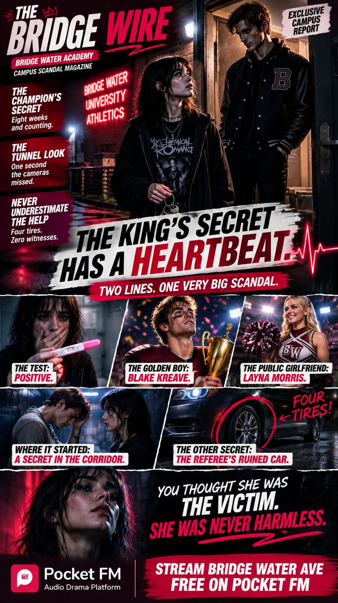
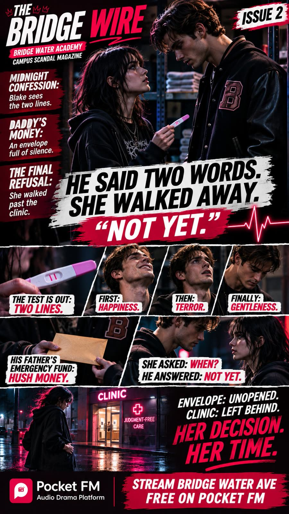
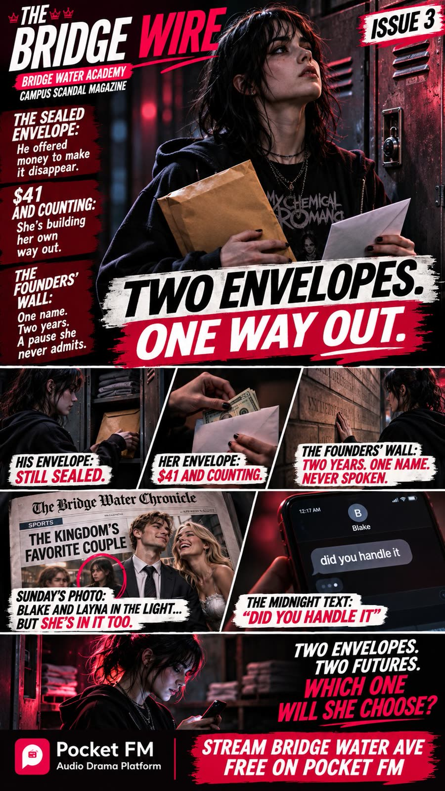
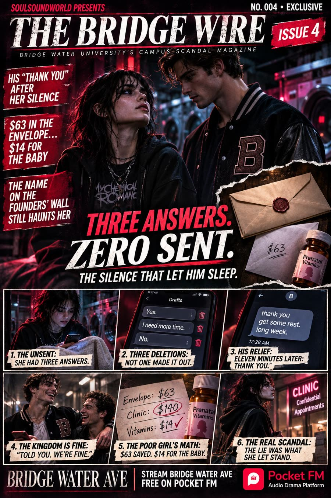
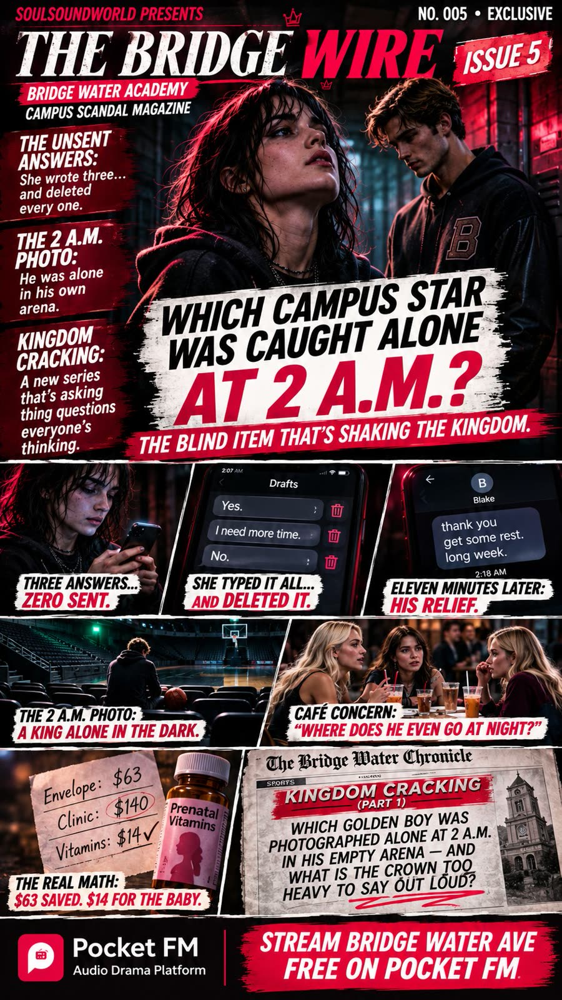
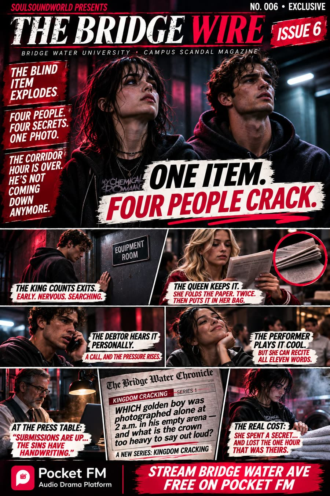
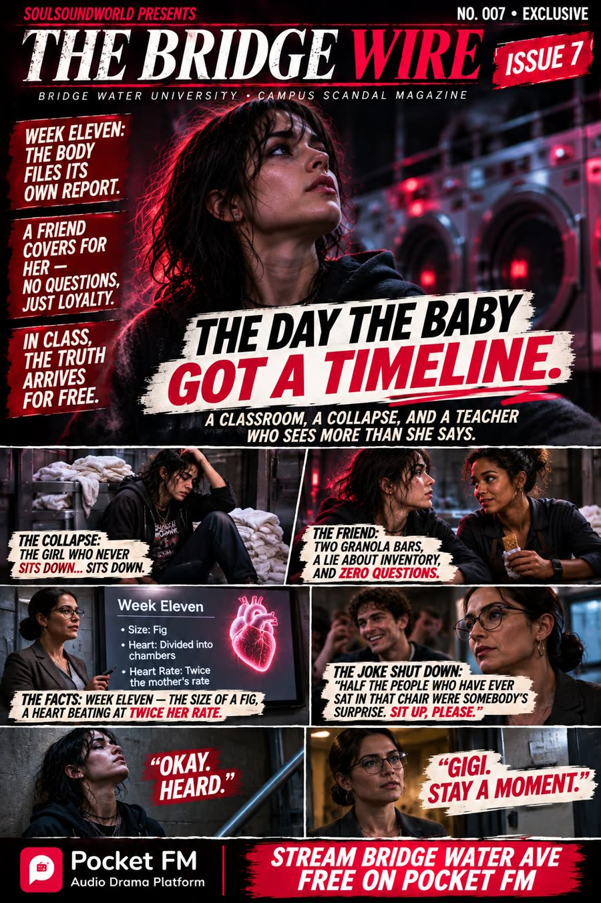
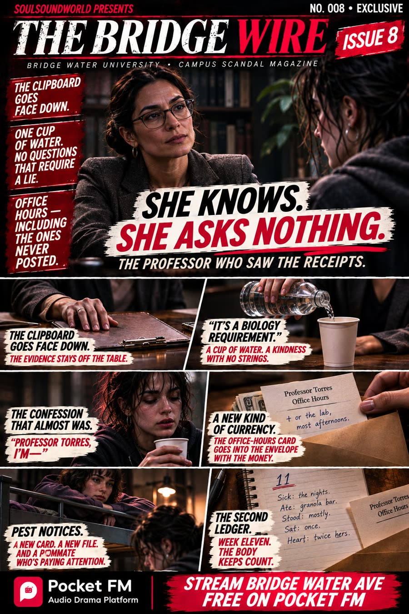
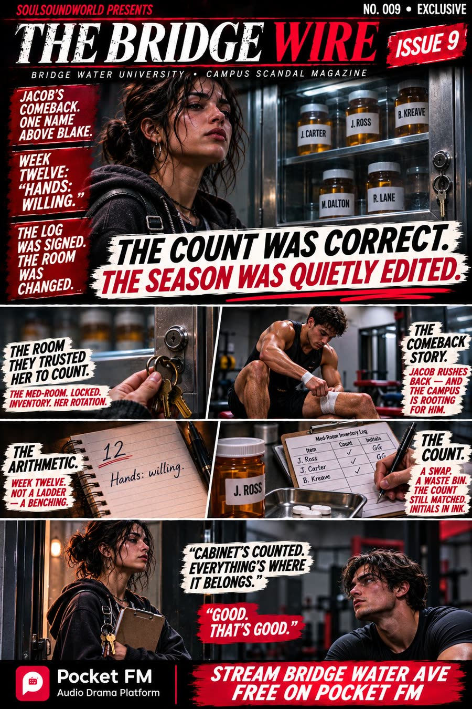
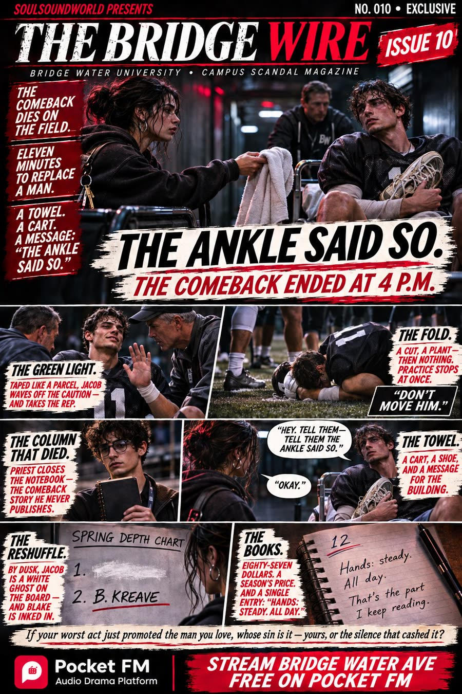
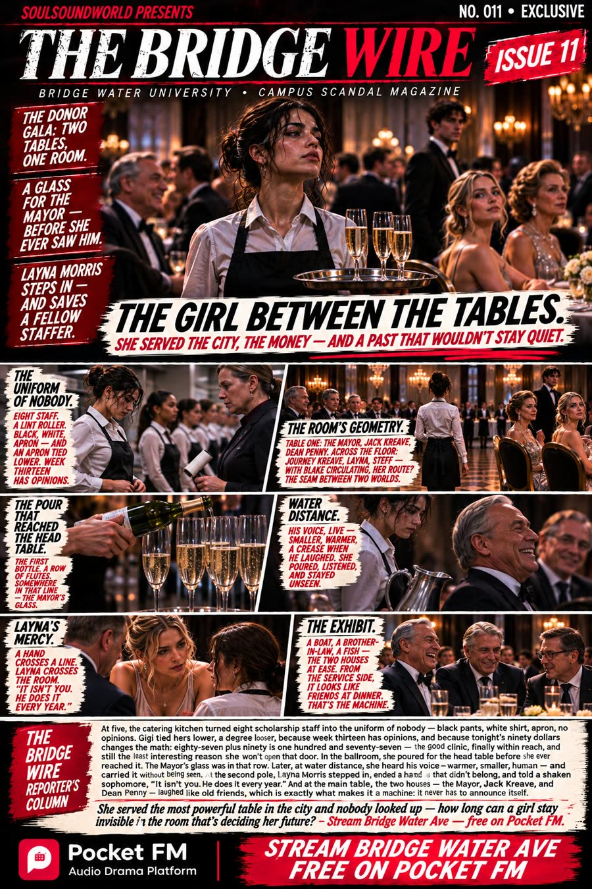
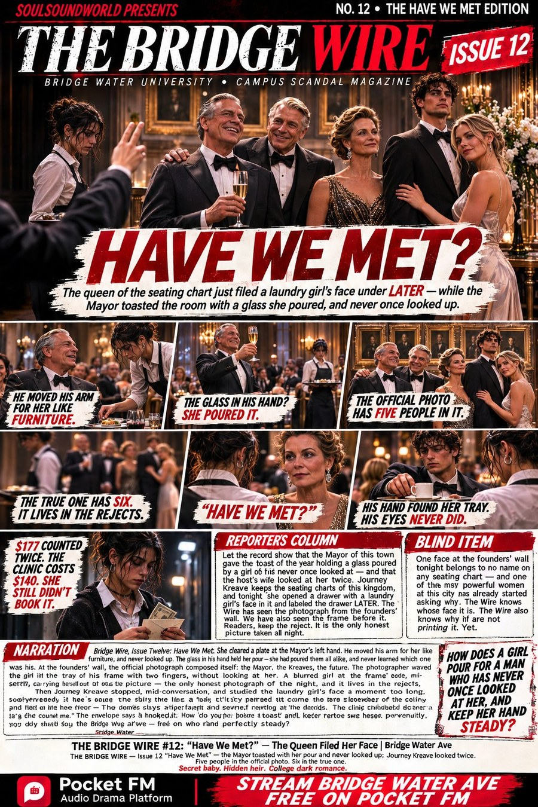
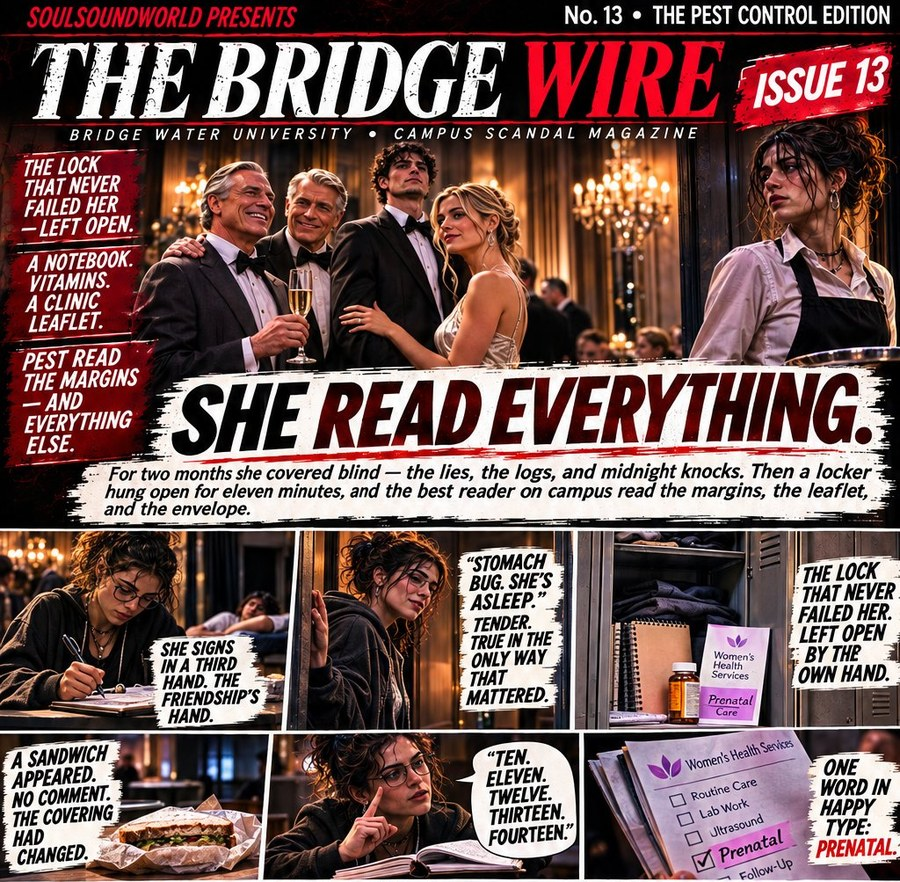
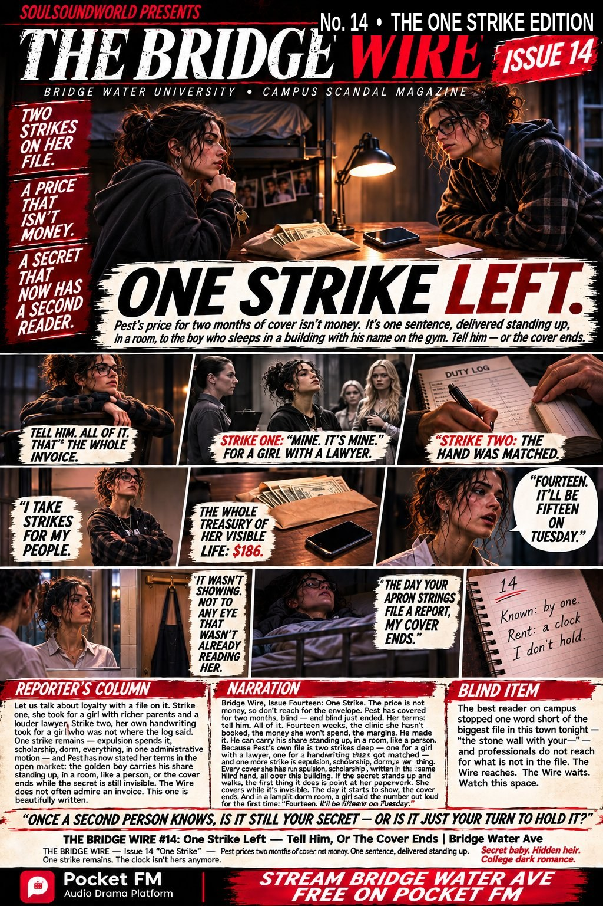
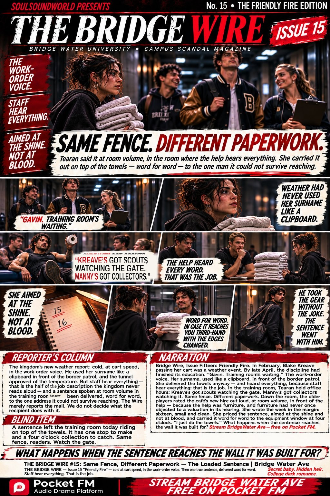
Stream BRIDGE WATER AVE free on Pocket FM → Collect the front pages on Zora → Watch the editions on YouTube →